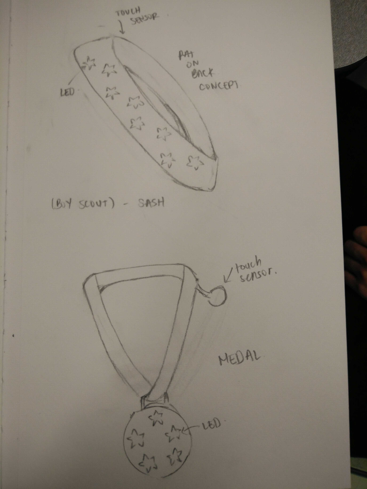

For this project, we were tasked with designing some piece of fashion tech: a type of wearable technology that focuses on a story.
I came up with a bunch of different designs. Ones I personally found interesting were the singing scarf that lights up along its length, colour according to pitch, and the glove that has an outer ring that glows depending on external temperatures, and the inner ring depending on the actual hand's temperature.
We had various different ideas that had merit, but after much debate and the feasibility and complexity of various designs, we found the one with the best story was the military styled blazer with lighting up "medals" or "awards" that would light up when a pat on the back was given, like a reward for a good job.
My variations focused on how the medals could light up depending on the input, essentially changing colour depending on the number of taps in quick succession, and either erasing one in a long press or cycling through colours until a hand is lifted. The other idea was how to style these 'medals' as either bars, or having different colours.
The other group members devised the following sketches:
Dennis' sketches
Daniel's sketches
Payal's sketches
Fungai's sketches
From the beginning we knew that we wanted to use the force sensor as it made the most sense in terms of how to actually interact with the clothing with a pat on the back, as a button made less sense. The circuitry and code was then left to Daniel and Dennis.
The biggest challenge afterwards was preparing the blazer. Our intial thoughts were to use stars made of fabric and cotton to diffuse the light but as we constructed it, we realized this would not diffuse the light enough. We also realized sowing would take too long, plus frayed the points of the star, making it less defined. Kath helped us realize that tape would help with diffusing the light, along with our decision to bundle up the lights together to increase brightness. The addition of tape was beneficial in three ways: it carried light better, provided the fabric stars with form and rigidity in addition to being better suited for being hot glued onto holes that were cut larger for the LEDs.